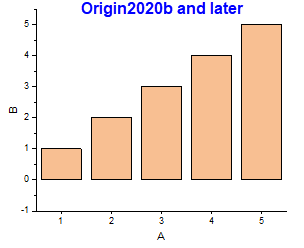
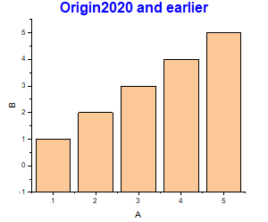

Letztes Update: 09.07.2020
Seit Origin 2020b beginnt das Säulen-/Balkendiagramm von der zusätzlichen Linien, unabhängig davon, ob diese Linie angezeigt wird oder nicht. Die zusätzliche Linie ist per Standard auf Y = 0 festgelegt. Falls Sie wählen, die Linie nicht zu zeigen, verwendet das Säulen-/Balkendiagramm trotzdem Y = 0 als Basislinie und beginnt von dort. Dies ist ein Unterschied zu vorherigen Versionen, bei denen Säulen-/Balkendiagramme immer von der XY-Achse ausgingen.
|  |  |
Um Säulen-/Balkendiagramme wie in den Vorgängerversionen von der Achse aus beginnen zu lassen,

Schlüsselwörter:Balken, untere Linie, untere Achsenlinie, Säulen, zusätzliche Linie, von Null ausgehen